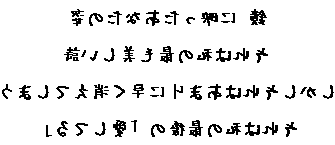

Littérature
la poésie
Dès le XVIIe siècle, les grands écrivains du pays ont développé le haïku, la forme poétique la plus courte du monde. Composé de trois vers, il raconte et révèle un instant de vérité, un sentiment fort et éphémère.
Roman contemplatif
Se dit d'un état particulier dans lequel l'âme se livre tout entière à la contemplation.
Manga
une bande dessinée japonaise. La plupart des mangas se conforment à un style développé au Japon à la fin du xixe siècle, alors que la forme a une longue préhistoire dans l'art japonais antérieur. Au Japon, le terme manga désigne plus généralement la bande dessinée, quelle que soit son origine. En Occident, le mot « manga » désigne une bande dessinée japonaise, mais aussi parfois une bande dessinée non japonaise respectant les codes des productions populaires japonaises ou pour nommer, par métonymie, d'autres produits visuels rappelant certaines de ces bandes dessinées (dessins animés, style graphique, etc.).
Cinématographie
Dès ses origines, le cinématographe, introduit au japon en 1897 par deux opérateurs des Frères Lumière, est évidemment fondé sur la représentation de la réalité (scènes de rue), mais aussi de l'art le plus populaire dans le pays, le théâtre Kabuki.
années 30
Jusqu'aux années trente, l'industrie cinématographique japonaise est dominée par deux compagnies, la Nikkatsu et la Kokkatsu. La première a une production culturelle traditionnelle fondée sur un style simple : plans moyens filmés en continu, de façon à réduire le montage au maximum.
années 80
Au cours des années 1980, la production de Pinku eiga est prise en étau par deux nouvelles contraintes. D'abord, la récente concurrence exercée par la vulgarisation de la vidéo domestique. Dès 1982, la part de marché du segment "adulte" de cette dernière atteint déjà celle du film érotique diffusé en salles.
années 90
Imamura obtient sa deuxième palme d'or avec L'anguille en 1997 et termine sa carrière avec deux autres chefs-d'oeuvre : Kanzo Sensei en 1998 et De l'eau tiède sous un pont rouge en 2001.
années 2000
Kitano réalise en 2000 le très pictural Dolls, inspiré du théâtre de marionnettes japonais bunraku en 2002. En 2003 puis 2005, Zatochi puis Takeshi's sont des méditations sur la violence, où comment la violence accumulée sur des êtres fragiles peut être transformée en spectacle de la violence. L'animation reste dynamique des talents confirmés comme Miyazaki et Takahata et leur studio Ghibli ou Otomo qui réalise Steamboy en 2003 ou Mamoru Oshii.
Oeuvre historique
La peinture japonaise (絵画, kaiga?), l'un des plus anciens des arts japonais, a traversé tout au long de son histoire une grande variété de genres et de styles.

Il y a encore plein d'autres peintures japonaise qui sont considérées comme historisque, c'est d'ailleurs leurs oeuvres qui ont le plus marqué l'histoire.